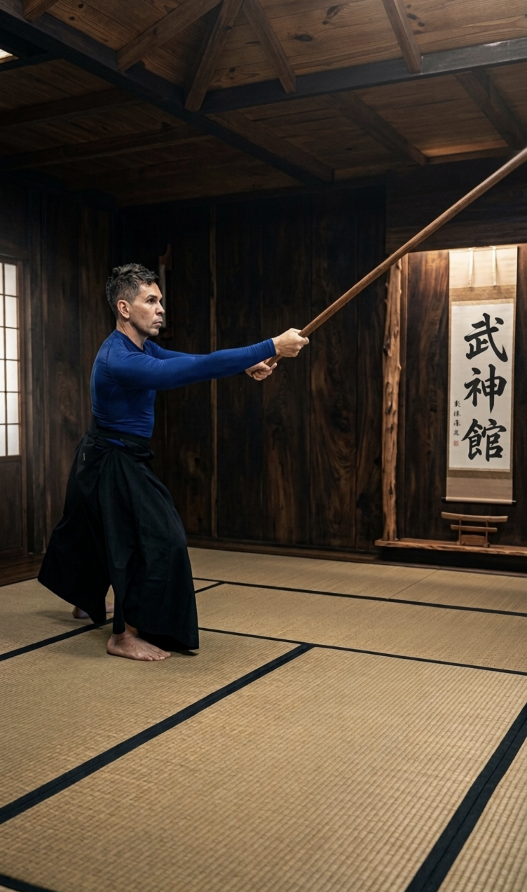
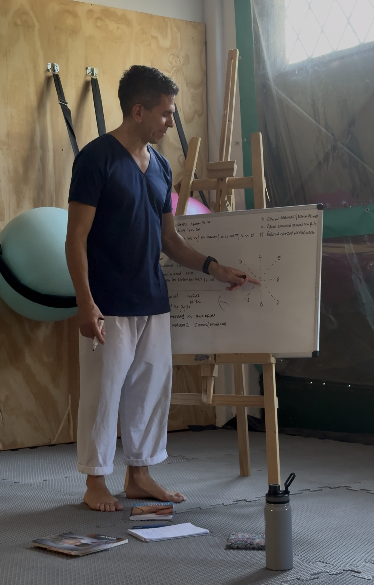
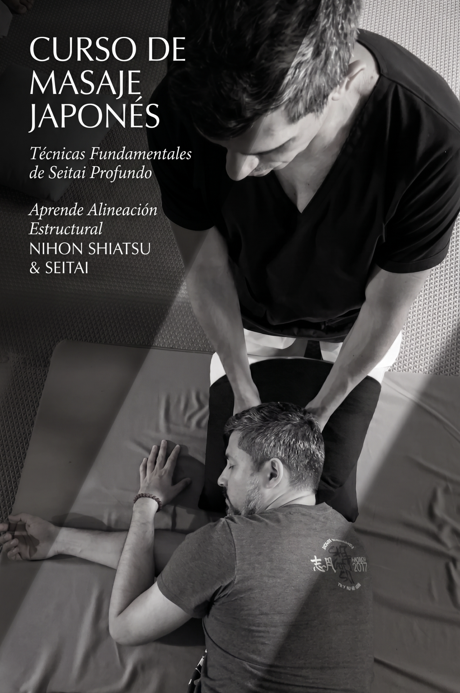

Formación de Maestría Profesional y Reordenamiento Biológico en Espacio INYO.
Formación de Maestría Profesional y Reordenamiento Biológico en Espacio INYO.
Sábado 5 de Septiembre | 13:00 a 19:00 hs — Cupos Limitados
Formación Profesional
Espacio INYO
Formación Profesional Presencial & Práctica
Se abona por módulo individual. Reserva con el 50% de seña.
Horarios Clase Presencial:
Sábados de 9:00 a 15:00 hs
o de 13:00 a 19:00 hs
Luego del seminario presencial del sábado, tenés acceso a nuestras clases de práctica durante la semana en los siguientes horarios fijos:
• Lunes: 19:00 hs | • Miércoles: 10:00 hs | • Viernes: 18:00 hs y 20:00 hs
En estas clases participan alumnos regulares de Espacio INYO que asisten para realizar ejercicios de bienestar. Como estudiante de la Formación, te enseño a aplicar el método aprendido sobre personas reales que manifiestan sus impedimentos y dolencias concretas.
Por ejemplo: si el sábado aprendés el abordaje de cráneo, rostro, pecho y abdomen, en las prácticas semanales realizo preguntas sobre molestias específicas para generar un disparador clínico. De esta forma experimentás exactamente cómo guiarte, cómo actuar y de qué manera utilizar las herramientas terapéuticas ante cada caso real.
Tradición Vivencial & Desarrollo Continuo
Los módulos adquiridos cuentan con continuidad infinita en nuestra plataforma privada para alumnos. Tendrás disponible de forma permanente la bibliografía, guías digitales y videos instructivos paso a paso para repasar cuando lo necesites.
Tenés la posibilidad de volver a presenciar de manera totalmente gratuita los módulos que ya hayas realizado cada vez que se vuelvan a dictar. Esto te permite refrescar conocimientos y perfeccionar tu sensibilidad táctil.
En la tradición japonesa enseñamos bajo el concepto de KIHON (bases sólidas y profundas). Si bien cada módulo posee una estructura técnica firme, en cada edición presencial brindo nuevos enfoques y detalles según la energía del grupo y los casos presentes. Por este motivo, cada encuentro es una experiencia "única e irrepetible".
Valor por Módulo
$160.000.-Próximas Fechas
Sábados de Octubre y Noviembre
Horario: 9:00 a 15:00 hs o 13:00 a 19:00 hs
Reservar mi lugar (Seña 50% - $80.000)Especialización en tratamientos de "solución rápida" y masajes en silla ergonómica o posturas de meditación (Seiza). Protocolos intensivos de 12 operaciones básicas Namikoshi.
Próximas Fechas
Sábados de Noviembre y Diciembre
Horario: 9:00 a 15:00 hs o 13:00 a 19:00 hs
Reservar mi lugar (Seña 50% - $80.000)Maestría en el abordaje lateral. Postura fundamental para pacientes con movilidad reducida o problemas respiratorios.
Próximas Fechas
Sábados de Diciembre
Horario: 9:00 a 15:00 hs o 13:00 a 19:00 hs
Reservar mi lugar (Seña 50% - $80.000)El pilar del Shiatsu Namikoshi. Trabajo profundo sobre canales de Vejiga y puntos Yu para regular el sistema nervioso autónomo.
Próxima Clase Confirmada
Parte 2: Sábado 5 de Septiembre | 13:00 a 19:00 hs
Asegurar mi lugar en Parte 2 (Seña $80.000)Próxima Edición Parte 1
Parte 1: Sábados de Diciembre (2026) / Enero (2027)
Reservar Parte 1 (Seña 50% - $80.000)Módulo de máxima carga horaria. Se enfoca en la Diagnosis de Abdomen (Hara), tratamiento de extremidades, cuello, rostro y cierre energético.
Linaje & Filosofía de Enseñanza
Fundador de Espacio INYO · Terapeuta & Maestro Marcial
A través de mi formación en las **Artes Marciales Japonesas** incorporé, desde el linaje tradicional, el conocimiento terapéutico que los maestros enseñan bajo la disciplina de la **Bujinkan Budō Taijutsu**. En esta tradición, comprender la anatomía, la respuesta del sistema nervioso y el cuidado del cuerpo es indispensable para proteger la salud de los practicantes.
Este trasfondo marcial y filosófico constituye el diferencial fundamental frente a los enfoques terapéuticos occidentales convencionales: no abordamos el síntoma de forma aislada, sino desde la presencia, la biomecánica corporal del terapeuta y el respeto por el flujo biológico.
Mi objetivo como instructor es brindarte herramientas concretas para que adquieras la experiencia práctica necesaria, aprendiendo a intervenir con seguridad y sensibilidad ante las dolencias reales que manifiestan los pacientes en el consultorio.

Práctica en Linaje Marcial Tradicional

Enseñanza Teórica & Biomecánica

Transmisión Práctica en Futón